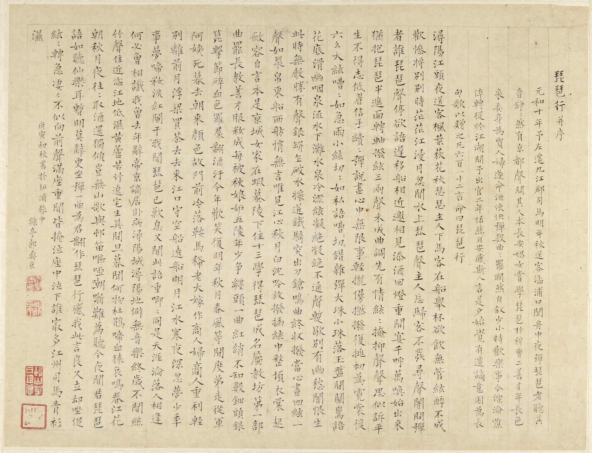

The Song of the Pipa
| Traditional | Transliteration | Simplified |
|---|---|---|
|
Pipa Xing Transliteration
浔阳 (Xún Yáng) 江 (Jiāng) 头 (tóu) 夜 (yè) 送 (sòng) 客 (kè), Xunyang-River-head-night-send-guest, 枫叶 (Fēng yè) 荻花 (dí huā) 秋 (qiū) 瑟瑟 (sè sè). Maple-leaf-reed-flower-autumn-rustle-rustle. 主人 (Zhǔ rén) 下马 (xià mǎ) 客 (kè) 在 (zài) 船 (chuán), Host-disembark-horse-guest-in-boat, 举酒 (jǔ jiǔ) 欲 (yù) 饮 (yǐn) 无 (wú) 管弦 (guǎn xián). Lift-wine-want-drink-no-pipes-and-strings. 醉 (zuì) 不成 (bù chéng) 欢 (huān) 惨 (cǎn) 将 (jiāng) 别 (bié), Drunk-not-achieve-happiness-miserable-about-to-part, 别时 (bié shí) 茫茫 (máng máng) 江 (jiāng) 浸 (jìn) 月 (yuè). Parting-time-vast-vast-river-soak-moon. 忽闻 (hū wén) 水上 (shuǐ shàng) 琵琶 (pí pa) 声 (shēng), Suddenly-hear-water-above-pipa-sound, 主人 (zhǔ rén) 忘归 (wàng guī) 客 (kè) 不 (bù) 发 (fā). Host-forget-return-guest-not-depart. 寻声 (xún shēng) 暗 (àn) 问 (wèn) 弹者 (tán zhě) 谁 (shéi), Follow-sound-secretly-ask-play-person-who, 琵琶 (pí pa) 声 (shēng) 停 (tíng) 欲 (yù) 语 (yǔ) 迟 (chí). Pipa-sound-stop-want-speak-delay. 移船 (yí chuán) 相近 (xiāng jìn) 邀 (yāo) 相见 (xiāng jiàn), Move-boat-approach-invite-meet-each-other, 添酒 (tiān jiǔ) 回灯 (huí dēng) 重开 (zhòng kāi) 宴 (yàn). Add-wine-return-lamp-reopen-feast. 千呼 (qiān hū) 万唤 (wàn huàn) 始 (shǐ) 出来 (chū lái), Thousand-call-ten thousand-invite-begin-come-out, 犹抱 (yóu bào) 琵琶 (pí pa) 半遮 (bàn zhē) 面 (miàn). Still-hold-pipa-half-cover-face. 转轴 (zhuǎn zhóu) 拨弦 (bō xián) 三两声 (sān liǎng shēng), Turn-axle-pluck-string-three-two-sounds, 未成 (wèi chéng) 曲调 (qǔ diào) 先 (xiān) 有 (yǒu) 情 (qíng). Not-yet-complete-melody-first-have-feeling. 弦弦 (xián xián) 掩抑 (yǎn yì) 声声 (shēng shēng) 思 (sī), String-string-conceal-restrain-sound-sound-think, 似诉 (sì sù) 平生 (píng shēng) 不得志 (bù dé zhì). Seem-tell-whole-life-not-achieve-ambition. 低眉 (dī méi) 信手 (xìn shǒu) 续续弹 (xù xù tán), Low-brow-trust-hand-continuously-play, 说尽 (shuō jìn) 心中 (xīn zhōng) 无限 (wú xiàn) 事 (shì). Tell-finish-heart-inside-boundless-matters. 轻拢 (qīng lǒng) 慢捻 (màn niǎn) 抹复 (mǒ fù) 挑 (tiǎo), Lightly-gather-slowly-twist-smear-again-lift, 初为 (chū wéi) 《霓裳》 (Ní Sháng) 后 (hòu) 《六幺》 (Liù Yāo). First-do-"Nishang"-then-"Liuyao". 大弦 (dà xián) 嘈嘈 (cáo cáo) 如 (rú) 急雨 (jí yǔ), Big-string-noisy-noisy-like-rapid-rain, 小弦 (xiǎo xián) 切切 (qiè qiè) 如 (rú) 私语 (sī yǔ). Small-string-cut-cut-like-whisper. 嘈嘈切切 (cáo cáo qiè qiè) 错杂弹 (cuò zá tán), Noisy-cut-mix-play, 大珠 (dà zhū) 小珠 (xiǎo zhū) 落 (luò) 玉盘 (yù pán). Big-bead-small-bead-fall-jade-dish. 间关 (jiàn guān) 莺语 (yīng yǔ) 花底 (huā dǐ) 滑 (huá), Between-watch-warbler-speak-flower-bottom-slide, 幽咽 (yōu yè) 泉流 (quán liú) 冰下 (bīng xià) 难 (nán). Quiet-choke-spring-flow-ice-below-difficult. 冰泉 (bīng quán) 冷涩 (lěng sè) 弦凝绝 (xián níng jué), Ice-spring-cold-harsh-string-congeal-end, 凝绝 (níng jué) 不通 (bù tōng) 声暂歇 (shēng zàn xiē). Congeal-end-not-pass-sound-temporarily-stop. 别有 (bié yǒu) 幽愁 (yōu chóu) 暗恨 (àn hèn) 生 (shēng), Separately-have-quiet-sorrow-secret-hate-arise, 此时 (cǐ shí) 无声 (wú shēng) 胜 (shèng) 有声 (yǒu shēng). This-time-no-sound-better-have-sound. 银瓶 (yín píng) 乍破 (zhà pò) 水浆 (shuǐ jiāng) 迸 (bèng), Silver-vase-suddenly-break-water-syrup-burst, 铁骑 (tiě qí) 突出 (tū chū) 刀枪 (dāo qiāng) 鸣 (míng). Iron-cavalry-suddenly-emerge-knife-spear-sound. 曲终 (qū zhōng) 收拨 (shōu bō) 当心 (dāng xīn) 画 (huà), Tune-end-gather-play-intend-heart-paint, 四弦 (sì xián) 一声 (yī shēng) 如 (rú) 裂帛 (liè bó). Four-strings-one-sound-like-split-silk. 东船 (dōng chuán) 西舫 (xī fǎng) 悄无言 (qiāo wú yán), East-boat-west-boat-quiet-no-words, 唯见 (wéi jiàn) 江心 (jiāng xīn) 秋月 (qiū yuè) 白 (bái). Only-see-river-center-autumn-moon-white. 沉吟 (chén yīn) 放拨 (fàng bō) 插弦 (chā xián) 中 (zhōng), Ponder-release-play-insert-string-among, 整顿 (zhěng dùn) 衣裳 (yī shāng) 起 (qǐ) 敛容 (liǎn róng). Straighten-clothes-rise-collect-appearance. 自言 (zì yán) 本是 (běn shì) 京城 (jīng chéng) 女 (nǚ), Self-say-originally-be-capital-city-woman, 家在 (jiā zài) 虾蟆 (xiā má) 陵下 (líng xià) 住 (zhù). Home-at-toad-hill-under-live. 十三 (shí sān) 学得 (xué dé) 琵琶 (pí pa) 成 (chéng), Thirteen-learn-achieve-pipa-complete, 名属 (míng shǔ) 教坊 (jiào fāng) 第一 (dì yī) 部 (bù). Name-belong-music-office-first-division. 曲罢 (qǔ bà) 曾教 (céng jiào) 善才 (shàn cái) 服 (fú), Tune-end-formerly-teach-good-talent-subdue, 妆成 (zhuāng chéng) 每被 (měi bèi) 秋娘 (qiū niáng) 妒 (dù). Makeup-complete-often-by-autumn-girl-envy. 五陵 (Wǔ líng) 年少 (nián shào) 争缠头 (zhēng chán tóu), Wuling-youngsters-compete-chase-after, 一曲 (yī qǔ) 红绡 (hóng xiāo) 不知 (bù zhī) 数 (shù). One-tune-red-silk-not-know-count. 钿头 (diàn tóu) 银篦 (yín bì) 击节 (jī jié) 碎 (suì), Inlaid-head-silver-comb-strike-rhythm-break, 血色 (xuè sè) 罗裙 (luó qún) 翻 (fān) 酒污 (jiǔ wū). Blood-color-gauze-skirt-flip-wine-stain. 今年 (jīn nián) 欢笑 (huān xiào) 复 (fù) 明年 (míng nián), This-year-mirth-repeat-next-year, 秋月 (qiū yuè) 春风 (chūn fēng) 等闲度 (děng xián dù). Autumn-moon-spring-wind-idly-pass. 弟走 (dì zǒu) 从军 (cóng jūn) 阿姨 (ā yí) 死 (sǐ), Younger-brother-leave-join-army-aunt-die, 暮去 (mù qù) 朝来 (zhāo lái) 颜色 (yán sè) 故 (gù). Dusk-go-morning-come-appearance-old. 门前 (mén qián) 冷落 (lěng luò) 鞍马 (ān mǎ) 稀 (xī), Door-front-desolate-saddle-horse-sparse, 老大 (lǎo dà) 嫁作 (jià zuò) 商人 (shāng rén) 妇 (fù). Eldest-daughter-marry-become-merchant-wife. 商人 (shāng rén) 重利 (zhòng lì) 轻别离 (qīng bié lí), Merchant-value-profit-light-regard-parting, 前月 (qián yuè) 浮梁 (fú liáng) 买茶 (mǎi chá) 去 (qù). Last-month-floating-bridge-buy-tea-go. 去来 (qù lái) 江口 (jiāng kǒu) 守空船 (shǒu kōng chuán), Go-come-river-mouth-guard-empty-boat, 绕船 (rào chuán) 月明 (yuè míng) 江水 (jiāng shuǐ) 寒 (hán). Around-boat-moon-bright-river-water-cold. 夜深 (yè shēn) 忽梦 (hū mèng) 少年 (shào nián) 事 (shì), Night-deep-suddenly-dream-youth-affairs, 梦啼 (mèng tí) 妆泪 (zhuāng lèi) 红阑干 (hóng lán gān). Dream-cry-makeup-tears-red-railing-dry. 我闻 (wǒ wén) 琵琶 (pí pa) 已 (yǐ) 叹息 (tàn xī), I-hear-pipa-already-sigh, 又闻 (yòu wén) 此语 (cǐ yǔ) 重 (zhòng) 唧唧 (jī jī). Again-hear-this-speech-emphasize-chirp-chirp. 同是 (tóng shì) 天涯 (tiān yá) 沦落人 (lún luò rén), Together-be-world's-end-lost-people, 相逢 (xiāng féng) 何必 (hé bì) 曾相识 (céng xiāng shí)! Meet-why-must-ever-acquainted! 我从 (wǒ cóng) 去年 (qù nián) 辞 (cí) 帝京 (dì jīng), I-from-last-year-resign-imperial-capital, 谪居 (zhé jū) 卧病 (wò bìng) 浔阳 (Xún Yáng) 城 (chéng). Banish-live-ill-Xunyang-city. 浔阳 (Xún Yáng) 地僻 (dì pì) 无 (wú) 音乐 (yīn yuè), Xunyang-place-remote-no-music, 终岁 (zhōng suì) 不闻 (bù wén) 丝竹 (sī zhú) 声 (shēng). Whole-year-not-hear-silk-bamboo-sound. 住近 (zhù jìn) 湓江 (Pén Jiāng) 地低湿 (dì dī shī), Live-near-Pen River-place-low-wet, 黄芦 (huáng lú) 苦竹 (kǔ zhú) 绕宅 (rào zhái) 生 (shēng). Yellow-reed-bitter-bamboo-surround-house-grow. 其间 (qí jiān) 旦暮 (dàn mù) 闻何物 (wén hé wù)? Between-them-dawn-dusk-hear-what-thing? 杜鹃 (dù juān) 啼血 (tí xuè) 猿哀鸣 (yuán āi míng). Cuckoo-cry-blood-monkey-sad-cry. 春江 (chūn jiāng) 花朝 (huā zhāo) 秋月夜 (qiū yuè yè), Spring-river-flower-morning-autumn-moon-night, 往往取酒 (wǎng wǎng qǔ jiǔ) 还独倾 (huán dú qīng). Often-take-wine-still-alone-pour. 岂无 (qǐ wú) 山歌 (shān gē) 与 (yǔ) 村笛 (cūn dí), How-can-not-have-mountain-song-and-village-flute, 呕哑 (ǒu yā) 嘲哳 (cháo zhā) 难为听 (nán wéi tīng). Retch-mute-mock-chirp-hard-to-listen. 今夜 (jīn yè) 闻君 (wén jūn) 琵琶 (pí pa) 语 (yǔ), Tonight-hear-lord-pipa-speech, 如听 (rú tīng) 仙乐 (xiān yuè) 耳暂明 (ěr zàn míng). Like-hear-fairy-music-ear-temporarily-bright. 莫辞 (mò cí) 更坐 (gèng zuò) 弹一曲 (tán yī qǔ), Do-not-refuse-again-sit-play-one-tune, 为君 (wèi jūn) 翻作 (fān zuò)《琵琶行》 (Pí pa Xíng). For-lord-turn-make-"Pipa Movement". 感我 (gǎn wǒ) 此言 (cǐ yán) 良久立 (liáng jiǔ lì), Feel-me-this-words-good-while-stand, 却坐 (què zuò) 促弦 (cù xián) 弦转 (xián zhuǎn) 急 (jí). Yet-sit-hasten-string-string-turn-fast. 凄凄 (qī qī) 不似 (bù sì) 向前 (xiàng qián) 声 (shēng), Mournful-mournful-not-like-previous-sound, 满座 (mǎn zuò) 重闻 (zhòng wén) 皆掩泣 (jiē yǎn qì). Full-seat-repeatedly-hear-all-cover-cry. 座中 (zuò zhōng) 泣下 (qì xià) 谁最多 (shéi zuì duō)? Seat-amid-cry-down-who-most-many? 江州 (Jiāng zhōu) 司马 (sī mǎ) 青衫 (qīng shān) 湿 (shī). Jiangzhou-governor-green-shirt-wet. |
"At the head of the Xunyang River, I bid farewell to my visitor on this night, The maple leaves and reed flowers rustle in the autumn breeze. The host dismounts, the guest embarks, Lifting the wine cup, desiring a drink, yet no pipes and strings are heard. Drunk but not joyful, about to part, it's a miserable time, As we part, the vast river soaks in the moonlight. Suddenly, I hear the sound of a pipa from the water above, The host forgets to return, the guest doesn't leave. Following the sound, I secretly inquire who plays, The sound of the pipa stops, as if wanting to speak, but delaying. Moving our boats closer, we invite each other to meet, Adding wine, relighting the lamp, we resume our feast. After numerous calls and invitations, she finally appears, Still holding the pipa, half of her face covered. Turning the axle, plucking the strings, producing a few sounds, The melody not yet complete, but the feelings are already there. Concealing the sounds of the strings, one by one they express thoughts, Seeming to tell of a lifetime of unfulfilled ambitions. With lowered brows, and trusting hands, she continues to play, Recounting countless matters from her heart. Lightly gathering, slowly twisting, smearing, and lifting again, First playing "Nishang", then "Liuyao". The large strings clamor loudly like a sudden rainstorm, While the small strings cut sharply like whispered secrets. The noisy and sharp sounds mix together in the play, As big and small beads fall onto the jade dish. Amidst the watchful warblers and speaking flowers, The quiet choking springs flow beneath the ice. The icy spring freezes the harsh strings, bringing the music to an end, The frozen strings no longer produce sound, temporarily ceasing. In this silence, hidden sorrows and secret resentments arise, At this moment, silence is better than sound. The silver vase suddenly breaks, water and syrup burst forth, The iron cavalry emerges suddenly, the sound of knives and spears. As the tune ends, the brush gathers to paint with intention, Four strings produce one sound, like splitting silk. The east boat and west boat are silent, with no words spoken, Only the autumn moon is seen, shining white in the river's center. Pondering, releasing, and playing amidst the strings, Straightening her clothes, she collects herself. She speaks of her origins as a woman from the capital city, Now residing under Toad Hill in Xunyang City. Thirteen years of learning the pipa have led to mastery, Belonging to the top division of the Imperial Music Bureau. After teaching many talented individuals to submit to her skill, She completes her makeup, often envied by the Autumn Lady. In Wuling, the young ones compete for attention, But her tune in red silk cannot be counted. With inlaid head and silver comb, she beats out rhythms, Her blood-colored gauze skirt flips, stained with wine. This year's mirth will repeat in the coming year, As autumn moons and spring winds idly pass. Her younger brother leaves to join the army, and her aunt passes away, From dusk to dawn, her appearance grows older. The area in front of her door is desolate, with sparse saddle horses, The eldest daughter marries a merchant, becoming a merchant's wife. The merchant values profit over parting, Last month, he bought tea on the floating bridge. Going and coming, she guards the empty boat at the river mouth, Around the boat, the moon shines brightly, and the river water is cold. In the deep night, she suddenly dreams of past affairs, Dreaming of crying, with makeup tears on the red railing. I hear the pipa and sigh deeply, Again, I hear these words, emphasized like chirping birds. We are all lost souls at the world's end, Why must we meet if we have never met before? Since last year, I resigned from the imperial capital, Exiled and bedridden, I now reside in Xunyang City. Xunyang is remote, with no music to be heard, For the whole year, there is no sound of silk and bamboo. Living near the Pen River, in a low and wet place, Yellow reeds and bitter bamboo grow around my house. Between dawn and dusk, what do I hear? Cuckoos crying blood, monkeys wailing in sorrow. On the spring river in the morning, and the autumn moon at night, I often take wine and pour it alone. How can there be no mountain songs and village flutes? The retching and muttering mockeries are hard to bear. Tonight, hearing you speak through the pipa, It's as if I'm hearing celestial music, and my ears are temporarily enlightened. Do not refuse to sit again and play a tune, For you, I will turn this into "The Pipa Movement". Feeling these words deeply, I stand for a long time, But then I sit down, hastily plucking the strings, which turn quickly. Mournful, mournful, not like the sounds from before, The entire audience hears it and many begin to cry. Who among them sheds the most tears? The Governor of Jiangzhou, in his green shirt, is soaked with them." |
